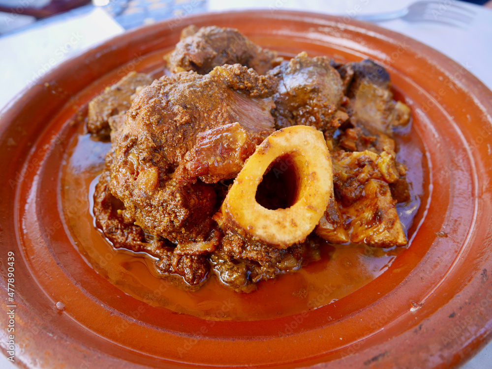

Beef tanjia

Description:
Like Moroccan tagine, tanjia is both a dish and its vessel. While tagine is cooked over charcoal or a wood fire, tanjia relies on the low heat of smoldering ashes. The latter takes longer to prepare and yields meat so tender it tastes like it's melting. Though beef and lamb are most often used, any meat is fair game.
Ingredients:
- 2 pounds beef chuck or stewing beef, cut into chunks
- 2 preserved lemons, seeds removed and thinly sliced
- 1 large onion, finely chopped
- 4 cloves of garlic, minced
- 2 tablespoons olive oil
- 2 teaspoons ground cumin
- 2 teaspoons ground coriander
- 1 teaspoon ground turmeric
- 1 teaspoon ground ginger
- 1 teaspoon paprika
- 1/2 teaspoon cinnamon
- 1/4 teaspoon cayenne pepper (optional, for heat)
- /4 cup chopped fresh cilantro
- 1/4 cup chopped fresh parsley
- Salt and pepper to taste
- Water or beef broth, as needed
Instructions:
- in a large bowl, combine the beef, chopped onion, minced garlic, preserved lemon slices, olive oil, and all the spices. Mix well to ensure the meat is coated with the spices. Cover the bowl and refrigerate for at least 2 hours or overnight to allow the flavors to meld.
- Preheat your oven to 300°F (150°C) or set your slow cooker to low heat.
- If using a tanjia pot, place the marinated beef mixture into the pot. If using a Dutch oven, heat some olive oil over medium-high heat and brown the beef in batches until nicely seared. Transfer the seared beef to a plate.
- If using a tanjia pot, cover it with the lid and place it directly in the preheated oven. If using a Dutch oven, return the seared beef to the pot.
- Slow cook the beef tanjian for about 4-6 hours in the oven or 6-8 hours in a slow cooker. Check periodically and add water or beef broth as needed to prevent the stew from drying out. The meat should be very tender and almost falling apart when done.
- Once the beef is cooked, taste and adjust the seasoning with salt and pepper if necessary. Stir in the chopped cilantro and parsley. Allow the flavors to meld for a few minutes before serving.
- Serve the beef tanjia hot with steamed couscous, bread, or Moroccan-style flatbread. You can garnish it with additional fresh herbs if desired.